Your entire plant, live on one monitor.
A 2D layout of your production area where every machine shows its status, the order and step it is working on and what is queued. It refreshes itself every few seconds.
Designed to be understood at a glance.
Seven statuses, one color each.
Producing, Queued, Available, Setup, Maintenance, Stopped and Inactive. With the machine count per status to understand the plant in seconds.
- Filters by category and work center
- Search by machine, order or product
- Running machines only

Follow every order through its machines.
Each row is a production order with its routing: which step is completed, which is running and which are waiting, with the assigned machine.
- Progress and step count per order
- Current step highlighted
- Animated production flow

What happens at every machine, right now.
Quantity produced, logged time, operator, orders on the machine and the flow to the next equipment. With a warning when something needs attention.
- Automatic refresh every 9 seconds
- Ideal for a plant monitor
- Zoom and layout navigation

Everything you need in this module.
2D layout
Your plant arranged as it is.
Production flow
Arrows between machines per routing.
Auto refresh
No page reloads.
Search
Machine, order or product.
Warnings
Machines that need attention.
Work centers
Group by area or category.
In four steps.
Add your machines
With category and work center.
Place them on the layout
As they are on your floor.
Assign them in routings
Each step with its machine.
Monitor live
From any screen.
Questions about the plant floor map.
Do I need sensors on the machines?
No. Status comes from orders and what operators log on the display. If you later want to integrate machine signals, we can talk about it.
How many machines can the map hold?
As many as your plant has. The layout has zoom, minimap and filters for large plants.
Can I leave it on a TV?
Yes, it refreshes itself and is designed for plant monitors.
Works better connected.

All your production, in one place.
We show you POMGT with your own products, machines and routings. In one call you will see how your plant looks inside the system.